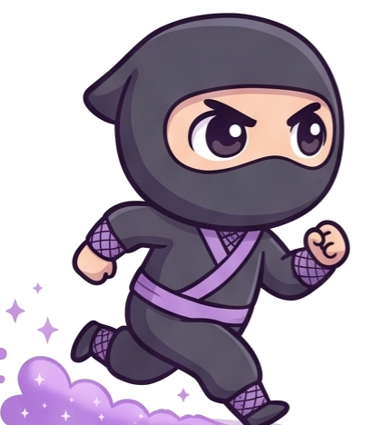
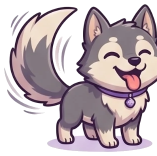

01GET THE IDEA
A little lightbulb moment.
Understand one useful idea about AI, in plain language that actually makes sense.
A GOOD PROMPT HAS A PLAN
Task+Context+Format
Get good at AI. One small adventure at a time.
Real skills, playful challenges, and a few friends
to help you find your way.


You don’t need to figure everything out at once.
Just take the next small step.
Understand one useful idea about AI, in plain language that actually makes sense.
Make a choice, try a prompt, spot what’s off. Get a helpful nudge when you need one.
Put your skills to the test, meet a new companion, and find out what’s around the bend.
Better answers begin with better questions.
See the difference a little context makes.
Start with the everyday things you want AI to help with. Every chapter builds on the last, so you always know where to go next.
Finish your first chapter.
A new friend is waiting.
Understand what AI is doing, give it the context it needs, and turn a vague ask into a useful prompt.
Begin chapter oneFind the important parts, understand what the model can see, and keep the meaning intact.
Spot confident mistakes, check the source, and learn when an answer needs a second look.
Go beyond word-for-word translation. Make language work for its context and audience.
Ask for another perspective, challenge your assumptions, and make your own thinking stronger.
A loyal friend. A helpful nudge. A little friendly rivalry.
Meet the characters who make the journey yours.
Wolf doesn’t need many words. He’s in your corner for the small wins, the second attempts, and every step ahead.
Every encounter belongs to your path. New friends arrive as you learn.
A little curiosity today. A little more confidence tomorrow.
Let’s get started Your first lesson is ready. Come as you are.